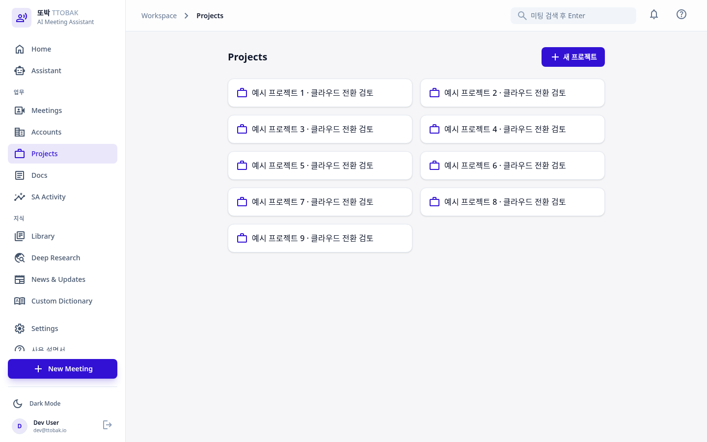
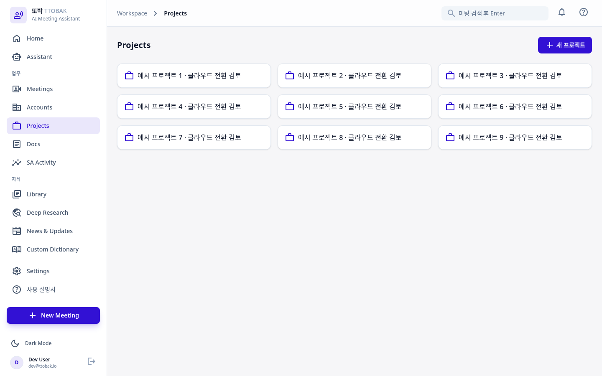
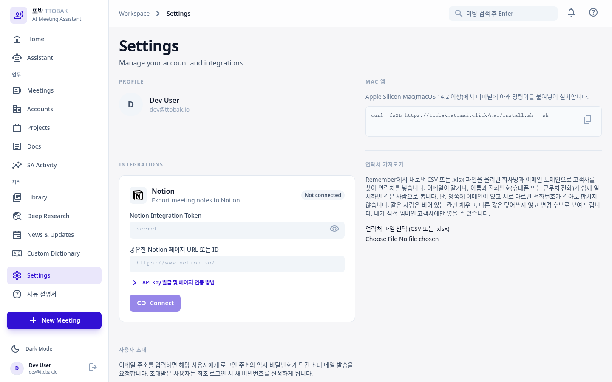
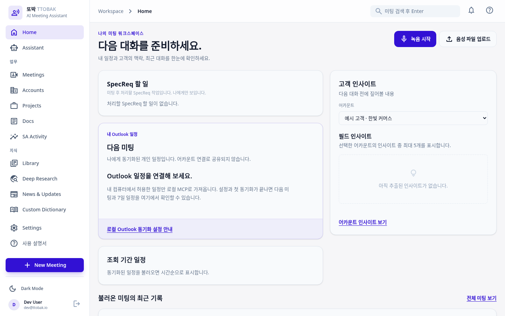
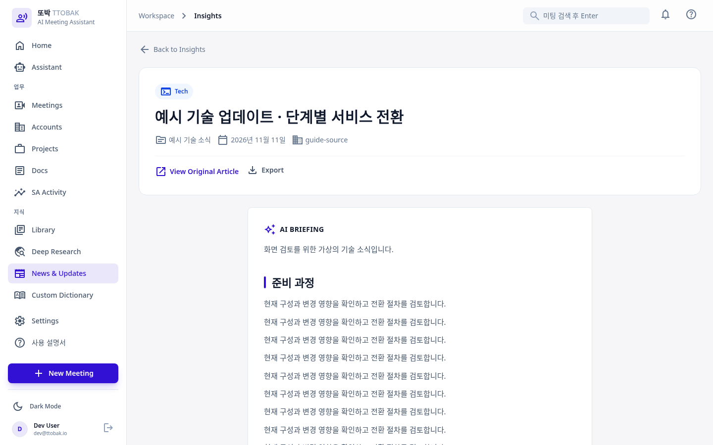
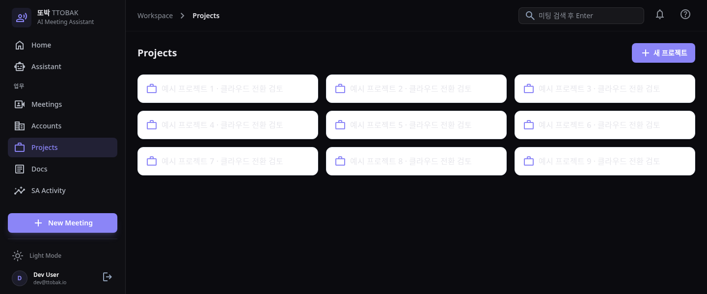

TTOBAK workspace design comparison
Actual application captures from 2026-11-11, using fictional local data.
Application menus were not redrawn. The development identity is a test fixture.
Read the design review and validation limits
The after image covers the left side; move the slider to 0% for the complete
before capture or 100% for the complete after capture.


Additional actual screens

Settings: independent sections use the available width.

Home: existing dashboard panels fill the working area.

Articles: the workspace grows while the body keeps its reading width.

Short dark window: menu scrolling stays separate from recording actions.